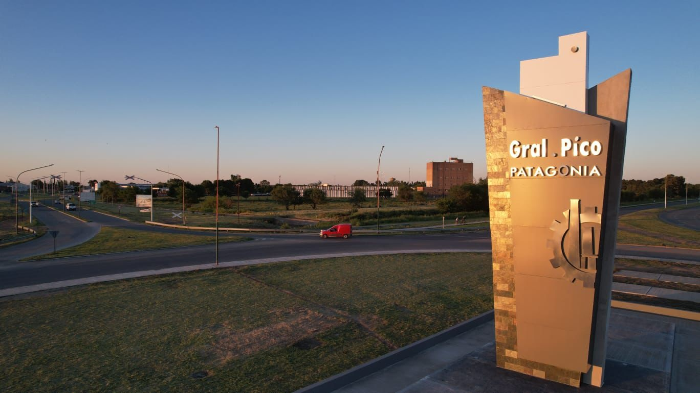
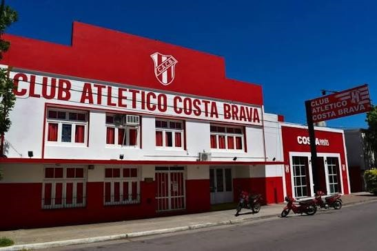
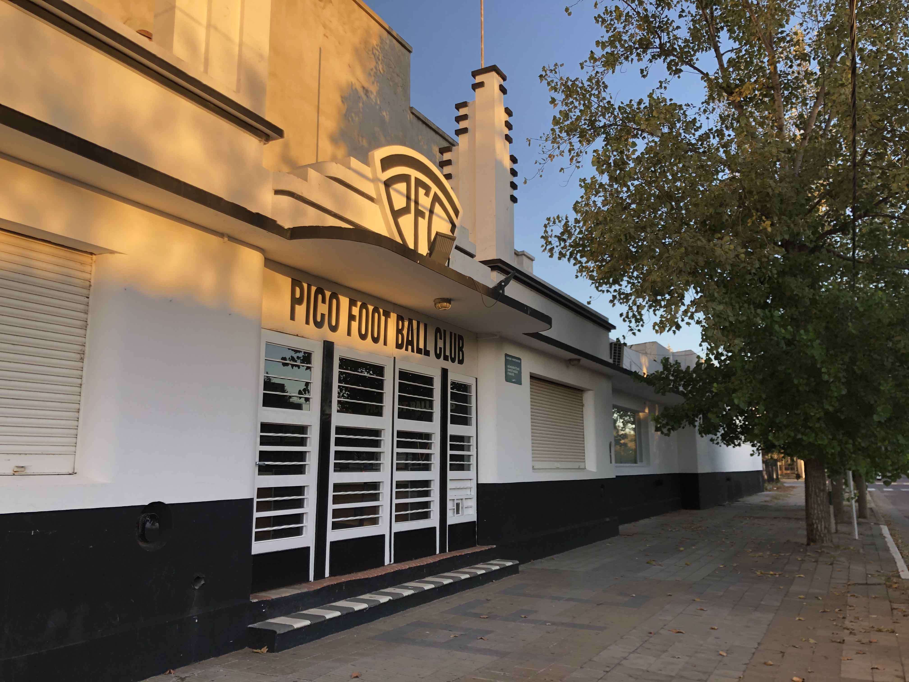
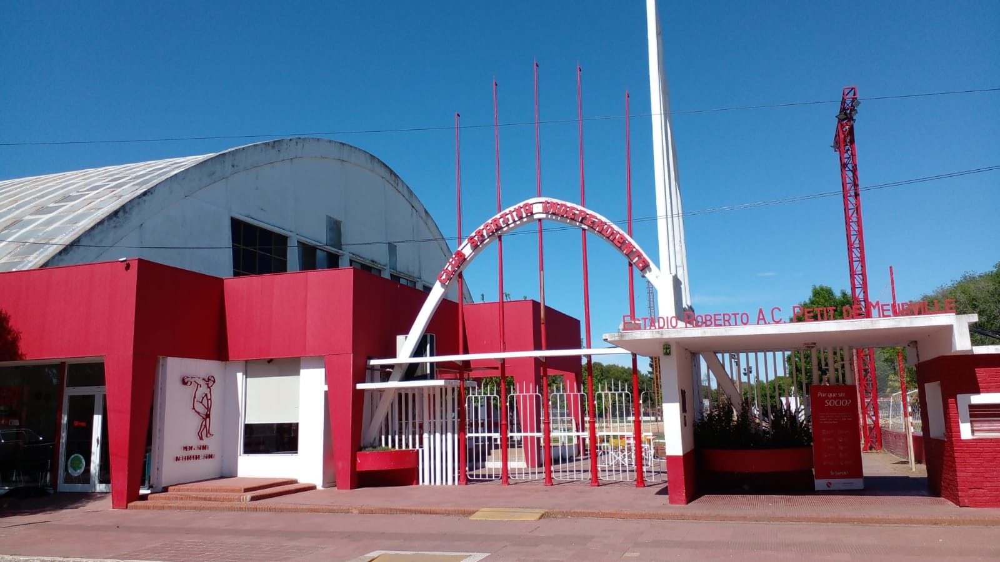

General Pico, ubicada en el norte de la provincia de La Pampa, es una ciudad con una importante vida social, cultural y deportiva. A lo largo de los años, distintas instituciones locales fueron creciendo junto con la comunidad y se convirtieron en espacios de encuentro, formación y participación para personas de todas las edades.
El deporte ocupa un lugar destacado dentro de la identidad piquense. Clubes como Cultural Argentino, Pico Futbol Club, Sportivo Independiente, Costa Brava y Ferro Carril Oeste forman parte de la historia de la ciudad y representan mucho más que la competencia deportiva: también son lugares donde se transmiten valores como el compañerismo, el esfuerzo, la responsabilidad y el sentido de pertenencia.
Cada una de estas instituciones tiene su propio recorrido, sus colores, sus disciplinas y sus espacios representativos. Algunas se destacan por su trayectoria en el fútbol, otras por el básquet, las actividades sociales o la formación de deportistas, pero todas cumplen un papel importante en la vida cotidiana de General Pico.
En este sitio se presenta una recorrida por cinco clubes representativos de la ciudad. Te invitamos a navegar por las distintas secciones para conocer su historia, sus datos principales y el aporte que realizan al deporte local.